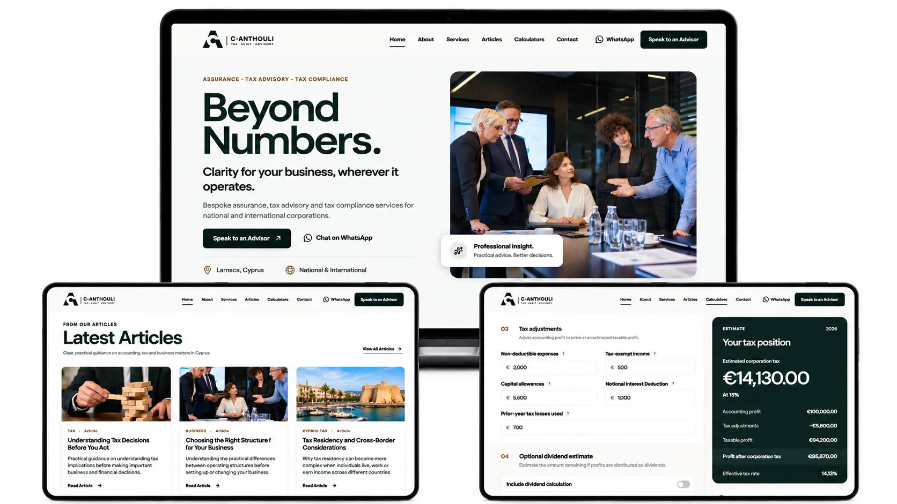

C. Anthouli Website Demonstration
A multi-page website demonstration developed for C. Anthouli, an accounting and advisory firm in Cyprus. The website includes company information, service pages, articles, contact details and interactive personal and corporate tax calculators.

Project overview
I developed a website concept for C. Anthouli, focusing on how an accounting and advisory firm could present its services and information online.
The website includes pages covering the firm's background, accounting and tax services, articles and contact information. I also developed interactive personal and corporate tax calculators as part of the site.
This was an independent project developed as a website demonstration, not a commissioned project for the firm.
Website structure
The website is organised into six main sections:
- Home: Overview of the firm, its services and key information.
- About: Company background and professional information.
- Services: Accounting, assurance, tax advisory and tax compliance services.
- Articles: Articles covering taxation, business structures and related topics.
- Calculators: Interactive personal and corporate Cyprus tax calculators.
- Contact: Contact information and an enquiry interface.
Key features and functionality
- Responsive navigation: Desktop navigation with a separate mobile menu.
- Service pages: Individual sections presenting the firm's accounting and tax services.
- Article pages: Separate pages for articles covering accounting, taxation and business topics.
- Personal tax calculator: JavaScript-based tool for estimating Cyprus personal income tax.
- Corporate tax calculator: Calculator using accounting profit and relevant tax adjustments.
- Contact interface: Contact details and an enquiry form interface.
- SEO and social metadata: Page titles, descriptions and Open Graph tags for search results and link sharing.
- Shared styling: Common navigation, typography, colours and layouts across the website.
Interactive tax calculators
I developed two JavaScript-based calculators for the website: a personal income tax calculator and a corporate tax calculator.
The corporate calculator takes accounting profit and allows adjustments for non-deductible expenses, exempt income, capital allowances, notional interest deduction and available tax losses. It uses these inputs to calculate estimated taxable profit and corporation tax.
The personal tax calculator allows users to enter income details and estimate their Cyprus personal income tax based on the applicable tax-year inputs.
Both calculators provide estimates and are not intended to replace professional tax advice or formal tax filings.
Design and implementation
The website uses a dark green and neutral colour palette, serif headings and sans-serif body text. I used shared layouts and styling to keep the navigation and visual presentation consistent across the pages.
HTML5 was used to structure the pages, CSS3 for styling and responsive layouts, and JavaScript for interactive elements and the tax calculators.
Technology
Project context
I developed this website independently as a demonstration of how C. Anthouli's online presence could be presented. At the time, the firm had already indicated that another developer was working on its website. The demonstration was therefore not commissioned or officially adopted by the firm.